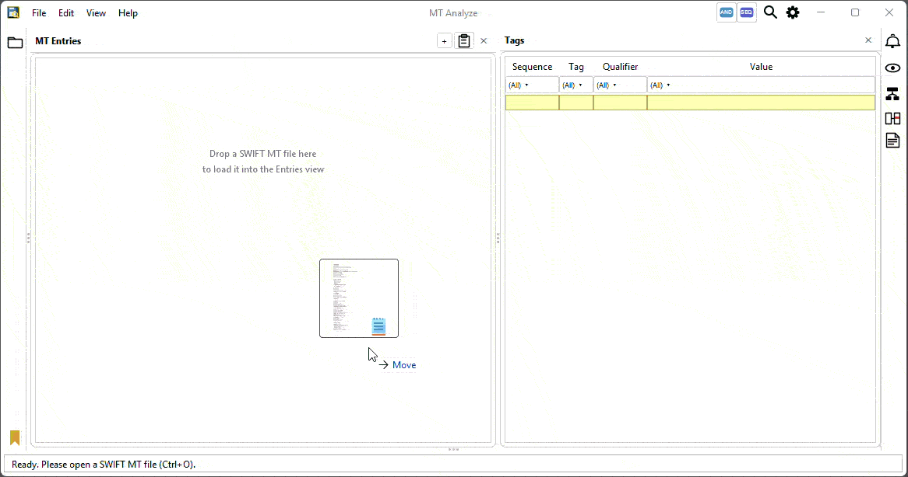

The fast way through a stack of SWIFT MT messages.
Open-source desktop tool for everyone working with SWIFT MT messages — day-to-day analysis, operations, reconciliation, audit and project work alike. Load any mix of MT files into one harmonized entries table, read the ISO 15022 meaning of every field, and compare messages side by side.
-
Simplicity
One window, one table, one click to detail.
-
No unnecessary dependencies
Two libraries: Prowide Core for parsing, FlatLaf for the UI. Nothing else in the JAR.
-
ISO 15022 native
Works directly with the ISO 15022 message model internally — any valid SWIFT MT message is handled without loss of information.
-
Tabular overview, with detail views
Every message lands in one sortable, filterable table — click any row to open a full field-by-field detail view.

Demo: a sample MT 536 securities statement from Citi’s ISO 15022 message format matrix, loaded by drag & drop, with two rows compared in the Diff view.
Drop, paste or import — every MT lands in the same entries table.
One harmonized entries table
Drop in any number of files with mixed MT types. Statements (535, 536, 940, 950) become one row per entry; simpler MTs a single row — all sortable, filterable and bookmarkable in one view.
Detail view on every row
Click a row for Tags (with ISO 15022 descriptions), Components and Source. Select two or more rows and the Diff tab opens automatically with deviating cells highlighted.
Made for everyday work
Excel-style filters and a quick expression language (=EUR, ^DE, !=FREE). Right-click Copy on the table or detail view to paste straight into Excel. Persistent notes, bookmarks and .mtd sessions.
Supported message types
MT Analyze ships with type-aware handling for the SWIFT MT messages most relevant to securities post-trade and cash reporting. Files of other MT types still parse via Prowide Core — if the type can’t be detected, you’ll be prompted to pick one.
Statements
Settlement instructions & confirmations
Triparty collateral
Cash reporting
Parsing is provided by Prowide Core (Apache 2.0).
CI/CD — quality, security & compliance
The build pipeline, repository setup and licensing enforce guarantees that matter when the tool sits next to production data — not just developer convenience.
No outbound network calls
The build fails if any class touches java.net.Socket, URL.openConnection(), HttpClient or related APIs — enforced by the forbidden-apis Maven plugin. MT Analyze cannot phone home, send telemetry, or exfiltrate data. It is a closed loop on your machine.
SonarCloud quality gate
Every change is scanned by SonarCloud for bugs, vulnerabilities, security hotspots and code smells. Releases are cut only when the gate is green — the badge in the README reflects the live status.
Signed Maven Central artifacts
JARs published to Maven Central are GPG-signed; the release JAR on GitHub Releases comes from a reproducible Actions workflow. Provenance is verifiable, mirroring into Nexus/Artifactory is straightforward — and Sonatype’s Component Intelligence tracks independent vulnerability and health data on the published artifact.
GitHub security scanning
Dependabot watches the dependency tree for known vulnerabilities and proposes patch PRs — so transitive issues in Prowide Core, FlatLaf and their downstream libraries get caught early. CodeQL adds semantic SAST for injection, deserialization, path traversal and unsafe reflection — a second pair of eyes alongside SonarCloud.
Auditable SBOM
A complete SPDX SBOM is generated by GitHub from the dependency graph and exportable from there. Drop it into your supply-chain review and the full transitive tree — with licenses and versions — is on the table.
Apache License 2.0
Permissive, audit-friendly licensing — usable in commercial products, with an explicit patent grant, and no copyleft on anything that depends on or wraps MT Analyze. Standard reading for any bank’s OSS-policy review; full text in LICENSE.